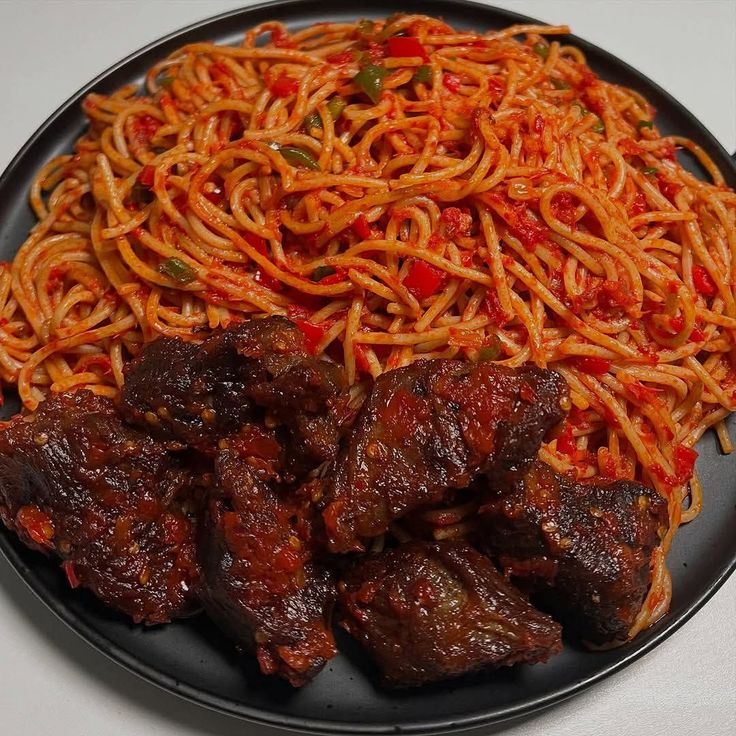
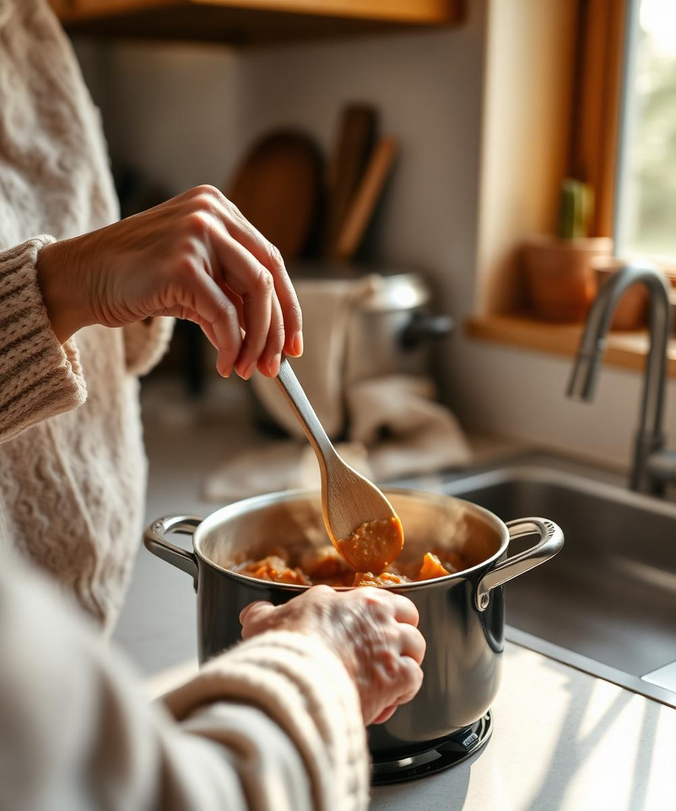
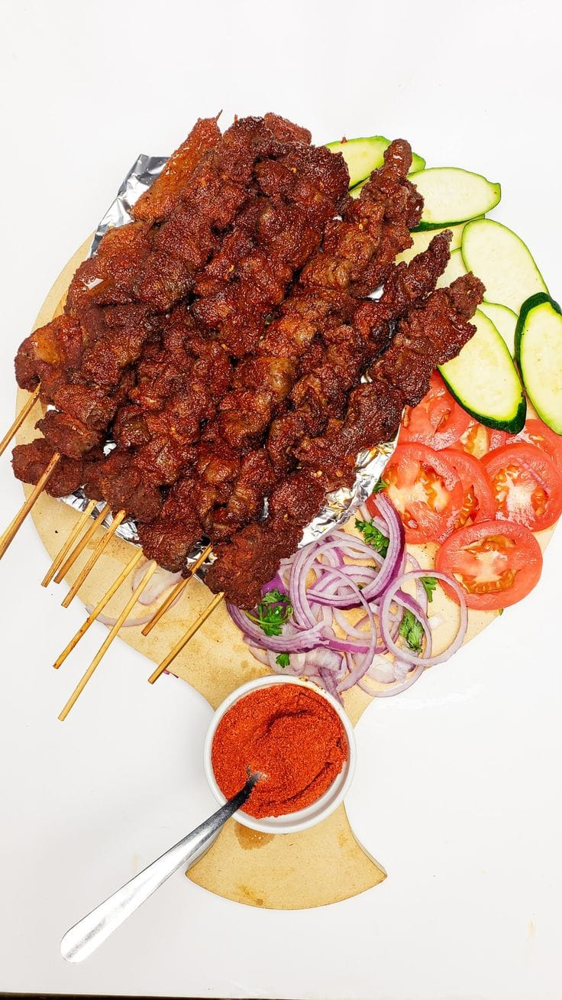
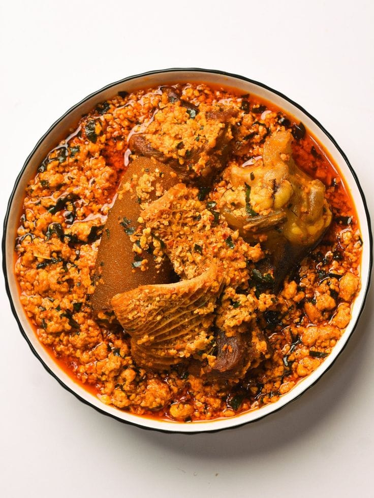
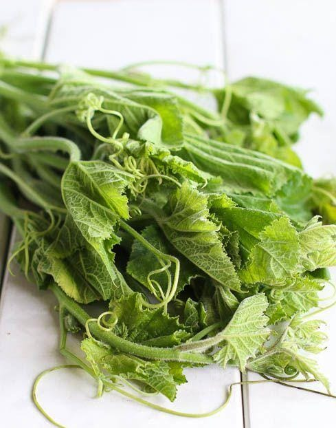
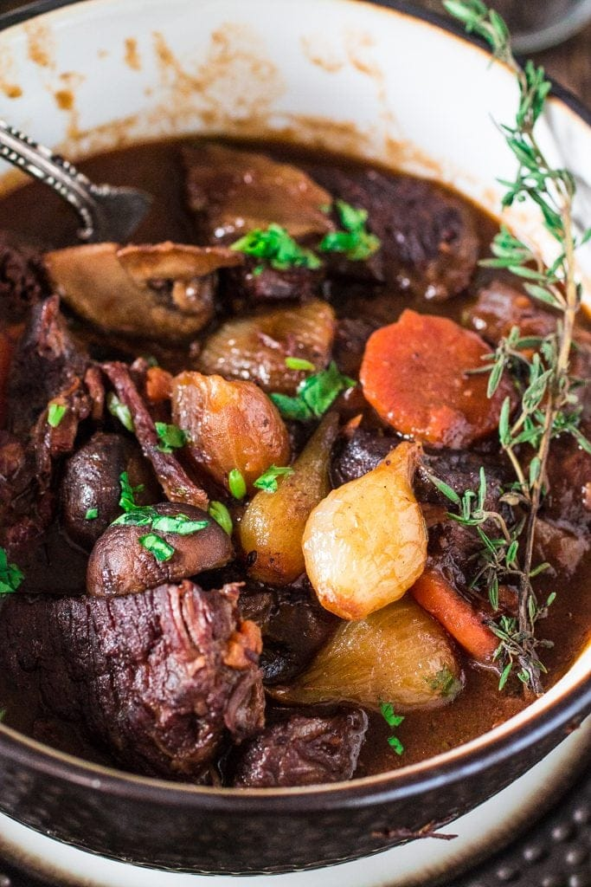
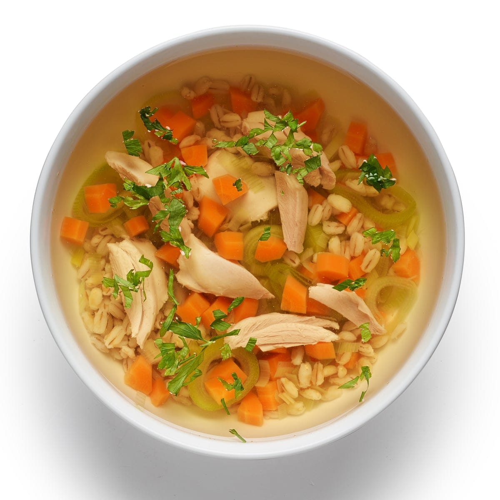
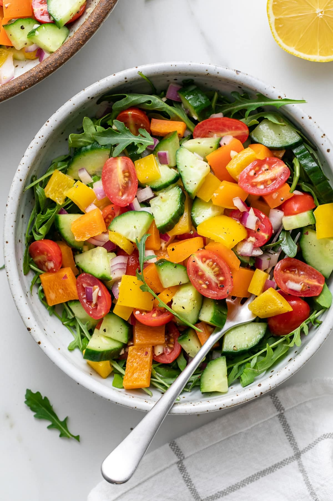

Cook like someone you love is teaching you.
Krizell is your warm, patient AI cooking companion. She listens, guides you through every step out loud, and teaches you the small things recipes never do so you never cook alone again.

Recipes tell you what to do.
They don't teach you how to cook.
A recipe is a list of steps. Krizell is a conversation, the warmth of learning from someone who has cooked this dish a hundred times, standing right beside you.
- ✓ Hands-free voice guidance no scrolling with sticky fingers
- ✓ Learn the sensory cues: sound, smell, sight
- ✓ Encouragement when things get tricky, not just instructions

Three beautiful steps from discovery to dinner.
Choose a dish. Choose your companion. Cook together hands-free.



Like having a chef in your kitchen without the pressure.
Cooking Mode gives you a beautiful, focused view. Krizell times steps, listens for your voice, and gently walks you through every sizzle, stir and taste.
Your personal guide, every step.
Preserving cooking knowledge while making it accessible to everyone.




Be one of the first to cook with Krizell.
Join thousands of home cooks already on the waitlist. We're rolling out access slowly, to keep every conversation feeling like magic.